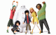
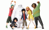
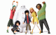
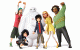

«Місто героїв» (англ. Big Hero 6; букв. Укр. Велика шістка героїв) - американський трьохвимірний комп'ютерний повнометражний анімаційний фільм 2014 року, створений студією «Walt Disney Animation Studios» і випущений кінокомпанією «Walt Disney Pictures». Заснований на однойменних персонажах коміксів видавництва Marvel, але, незважаючи на це, істотно відрізняється від першоджерела. Режисери - Дон Холл і Кріс Вільямс. Фільм удостоївся премії «Оскар» як кращий анімаційний повнометражний фільм.